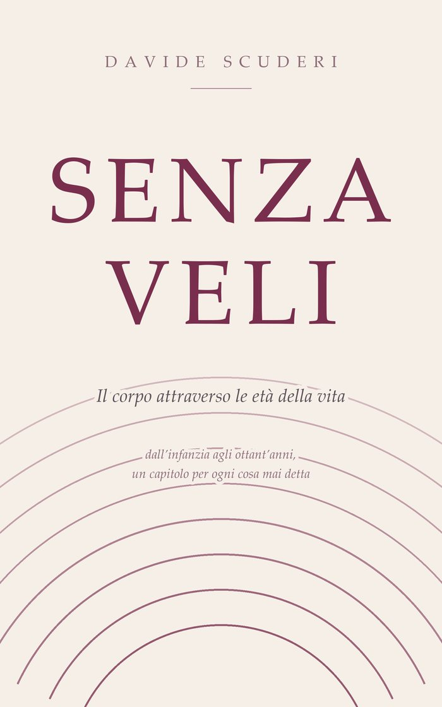

Il tuo corpo non è nato per essere guardato.
È nato per essere abitato.
Senza
veli
Il corpo di una donna, attraverso le età della vita.
Non è che regge tutto. È che non ha mai avuto il permesso di mollare.
In uscita · cartaceo e ebook

Di cosa parla
Dal corpo che diventa presto pubblico al bilancio dopo gli ottant'anni.
Comincia dall'infanzia — il momento in cui il corpo di una bambina smette di essere suo e diventa qualcosa che gli altri osservano, commentano, misurano. E attraversa tutto quello che viene dopo: la rabbia che non si può mostrare, i baci dovuti, i confini chiesti troppo tardi, il corpo che cambia e non torna com'era, la solitudine anche accanto a un partner presente, la menopausa come momento in cui il corpo smette di compiacere.
Ogni capitolo si regge da solo e finisce con un rientro nel corpo: poche righe da fare, non da capire.
Alcune righe
Come suona.
«Il tuo corpo non è nato per essere guardato. È nato per essere abitato.»Senza veli
«Non è che regge tutto. È che non ha mai avuto il permesso di mollare.»Senza veli
«Il tradimento: quando il corpo sa prima della testa.»Senza veli
«Chi sono, quando non sto servendo nessuno?»Senza veli
A che punto è
Il libro è pronto. Sta per uscire.
Il manoscritto è completo, e sta attraversando l'ultimo passaggio prima della stampa. Uscirà su Amazon in cartaceo e in ebook, come gli altri.
Il giorno che è disponibile lo scrivo qui — e lo mando per prima cosa a chi ha lasciato la mail qui sotto.
Quando esce
Lascia la mail: te lo scrivo io.
Una email il giorno che il libro è disponibile, con il link. Niente conto alla rovescia, niente sollecitazioni.
Fatto. Sei nella lista: ti scrivo io.
Uso l'indirizzo solo per questo. Non lo do a nessuno, e ti cancelli con un clic.
Nel frattempo
C'è già qualcosa da fare, ed è gratis.
Il percorso di sette giorni è la parte pratica della stessa storia: ogni mattina una parte del corpo, una mano, un minuto.